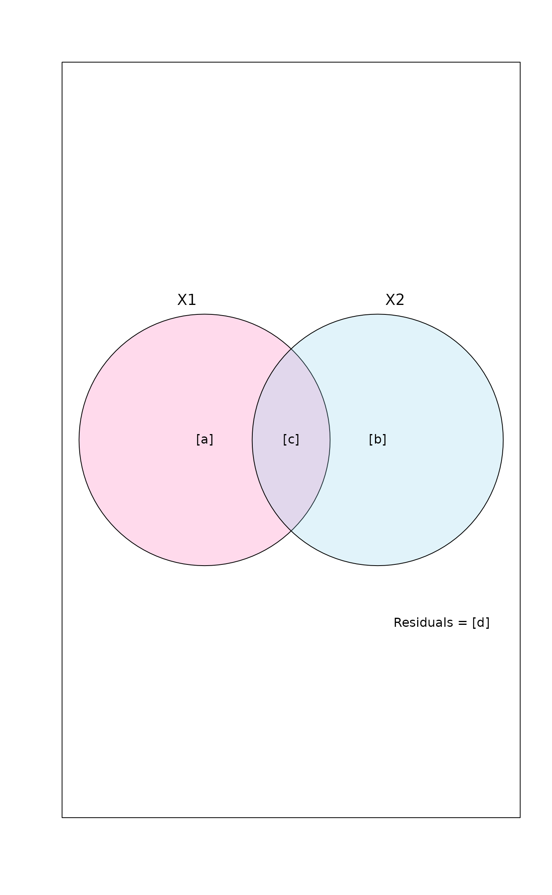
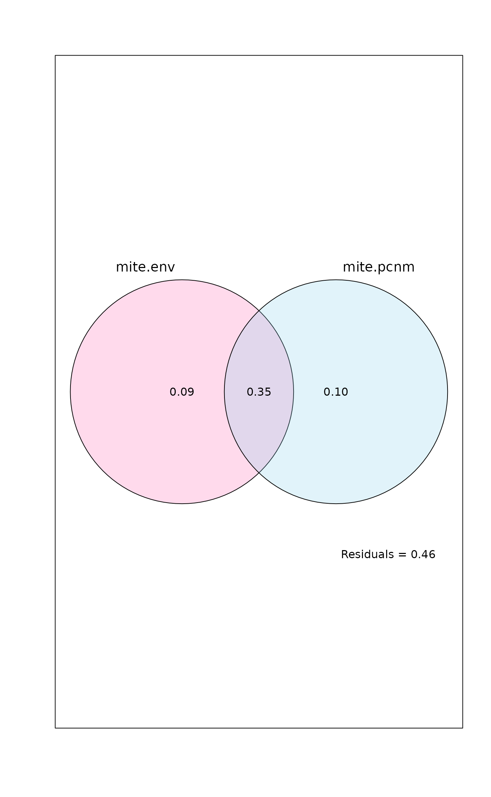
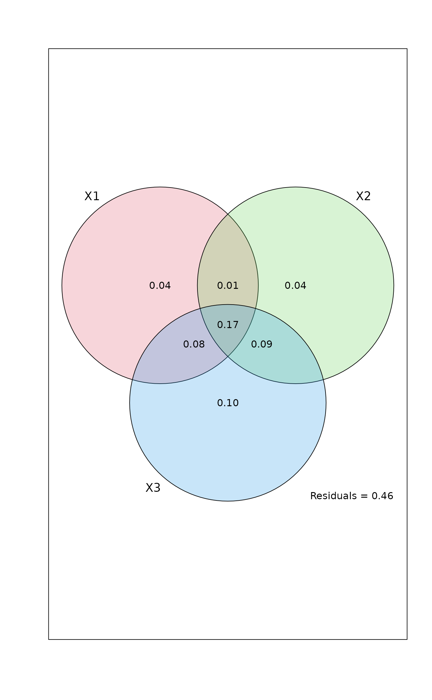
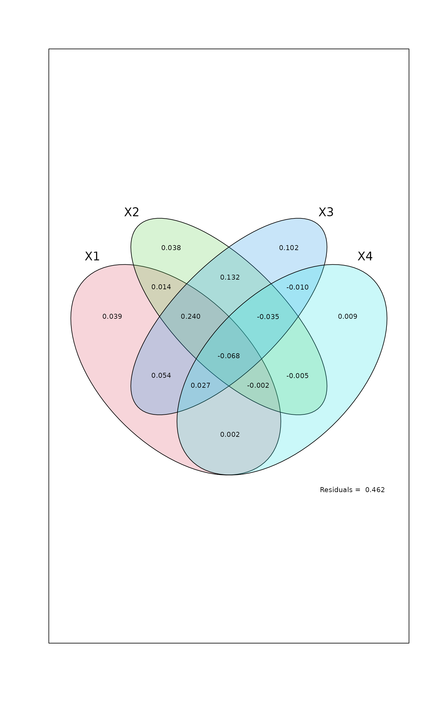
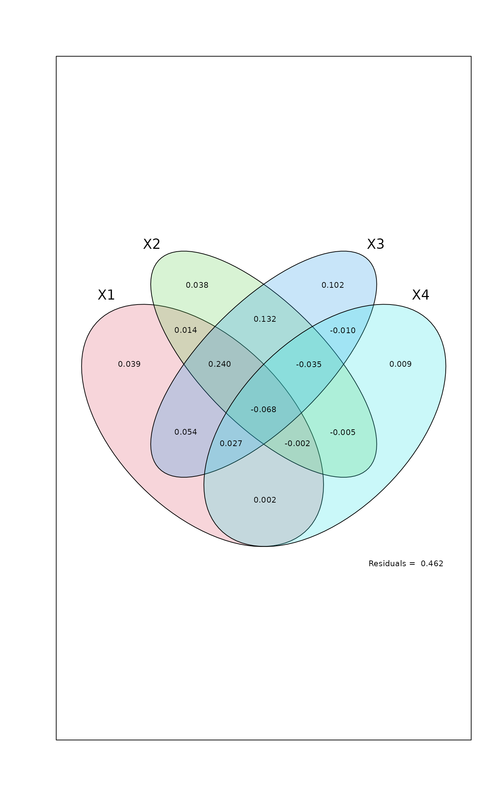

Partition the Variation of Community Matrix by 2, 3, or 4 Explanatory Matrices
varpart.RdThe function partitions the variation in community data or community dissimilarities with respect to two, three, or four explanatory tables, using adjusted \(R^2\) in redundancy analysis ordination (RDA) or distance-based redundancy analysis. If response is a single vector, partitioning is by partial regression. Collinear variables in the explanatory tables do NOT have to be removed prior to partitioning.
Usage
varpart(Y, X, ..., data, chisquare = FALSE, transfo, scale = FALSE,
add = FALSE, sqrt.dist = FALSE, permutations)
# S3 method for class 'varpart'
summary(object, ...)
showvarparts(parts, labels, bg = NULL, alpha = 63, Xnames,
id.size = 1.2, ...)
# S3 method for class 'varpart234'
plot(x, cutoff = 0, digits = 1, ...)Arguments
- Y
Data frame or matrix containing the response data table or dissimilarity structure inheriting from
dist. In community ecology, that table is often a site-by-species table or a dissimilarity object.- X
Two to four explanatory models, variables or tables. These can be defined in three alternative ways: (1) one-sided model formulae beginning with
~and then defining the model, (2) name of a single numeric or factor variable, or (3) name of matrix with numeric or data frame with numeric and factor variables. The model formulae can have factors, interaction terms and transformations of variables. The names of the variables in the model formula are found in data frame given indataargument, and if not found there, in the user environment. Single variables, data frames or matrices are found in the user environment. All entries till the next argument (dataortransfo) are interpreted as explanatory models, and the names of these extra arguments cannot be abbreviated nor omitted.- ...
Other parameters passed to functions. NB, arguments after dots cannot be abbreviated but they must be spelt out completely.
- data
The data frame with the variables used in the formulae in
X.- chisquare
Partition Chi-square or the inertia of Correspondence Analysis (
cca).- transfo
Transformation for
Y(community data) usingdecostand. All alternatives indecostandcan be used, and those preserving Euclidean metric include"hellinger","chi.square","total","norm". Ignored ifYare dissimilarities.- scale
Should the columns of
Ybe standardized to unit variance. Ignored ifYare dissimilarities.- add
Add a constant to the non-diagonal values to euclidify dissimilarities (see
wcmdscalefor details). Choice"lingoes"(orTRUE) use the recommended method of Legendre & Anderson (1999: “method 1”) and"cailliez"uses their “method 2”. The argument has an effect only whenYare dissimilarities.- sqrt.dist
Take square root of dissimilarities. This often euclidifies dissimilarities. NB., the argument name cannot be abbreviated. The argument has an effect only when
Yare dissimilarities.- permutations
If
chisquare = TRUE, the adjusted \(R^2\) is estimated by permutations, and this paramater can be a list of control values for the permutations as returned by the functionhow, or the number of permutations required, or a permutation matrix where each row gives the permuted indices.- parts
Number of explanatory tables (circles) displayed.
- labels
Labels used for displayed fractions. Default is to use the same letters as in the printed output.
- bg
Fill colours of circles or ellipses.
- alpha
Transparency of the fill colour. The argument takes precedence over possible transparency definitions of the colour. The value must be in range \(0...255\), and low values are more transparent. Transparency is not available in all graphics devices or file formats.
- Xnames
Names for sources of variation. Default names are
X1,X2,X3andX4.Xnames=NA,Xnames=NULLandXnames=""produce no names. The names can be changed to other names. It is often best to use short names.- id.size
A numerical value giving the character expansion factor for the names of circles or ellipses.
- x, object
The
varpartresult.- cutoff
The values below
cutoffwill not be displayed.- digits
The number of significant digits; the number of decimal places is at least one higher.
Details
The functions partition the variation in Y into components
accounted for by two to four explanatory tables and their combined
effects. If Y is a multicolumn data frame or matrix, the
partitioning is based on redundancy analysis (RDA, see
rda) or on constrained correspondence analysis if
chisquare = TRUE (CCA, see cca). If Y
is a single variable, the partitioning is based on linear
regression. If Y are dissimilarities, the decomposition is
based on distance-based redundancy analysis (db-RDA, see
dbrda) following McArdle & Anderson (2001). The
input dissimilarities must be compatible to the results of
dist. Vegan functions vegdist,
designdist, raupcrick and
betadiver produce such objects, as do many other
dissimilarity functions in R packages. Partitioning will be made
to squared dissimilarities analogously to using variance with
rectangular data – unless sqrt.dist = TRUE was specified.
The function primarily uses adjusted \(R^2\) to assess
the partitions explained by the explanatory tables and their
combinations (see RsquareAdj), because this is the
only unbiased method (Peres-Neto et al., 2006). The raw
\(R^2\) for basic fractions are also displayed, but
these are biased estimates of variation explained by the explanatory
table. In correspondence analysis (chisquare = TRUE), the
adjusted \(R^2\) are found by permutation and they vary
in repeated analyses.
The identifiable fractions are designated by lower case alphabets. The
meaning of the symbols can be found in the separate document (use
browseVignettes("vegan")), or can be displayed graphically
using function showvarparts.
A fraction is testable if it can be directly expressed as an RDA or
db-RDA model. In these cases the printed output also displays the
corresponding RDA model using notation where explanatory tables
after | are conditions (partialled out; see rda
for details). Although single fractions can be testable, this does
not mean that all fractions simultaneously can be tested, since the
number of testable fractions is higher than the number of estimated
models. The non-testable components are found as differences of
testable components. The testable components have permutation
variance in correspondence analysis (chisquare = TRUE), and
the non-testable components have even higher variance.
An abridged explanation of the alphabetic symbols for the individual
fractions follows, but computational details should be checked in the
vignette (readable with browseVignettes("vegan")) or in the
source code.
With two explanatory tables, the fractions explained
uniquely by each of the two tables are [a] and
[b], and their joint effect
is [c].
With three explanatory tables, the fractions explained uniquely
by each of the three tables are
[a] to [c], joint fractions between two tables are
[d] to [f], and the joint fraction between all three
tables is [g].
With four explanatory tables, the fractions explained uniquely by each
of the four tables are [a]
to [d], joint fractions between two tables are [e] to
[j], joint fractions between three variables are [k] to
[n], and the joint fraction between all four tables is
[o].
summary will give an overview of unique and and overall
contribution of each group of variables. The overall contribution
(labelled as “Contributed”) consists of the unique contribution
of the variable and equal shares of each fraction where the variable
contributes. The summary tabulates how each fraction is divided
between the variables, and the contributed component is the sum of all
these divided fractions. The summary is based on the idea of Lai et
al. (2022), and is similar to the output of their rdacca.hp
package.
There is a plot function that displays the Venn diagram and
labels each intersection (individual fraction) with the adjusted R
squared if this is higher than cutoff. A helper function
showvarpart displays the fraction labels. The circles and
ellipses are labelled by short default names or by names defined by
the user in argument Xnames. Longer explanatory file names can
be written on the varpart output plot as follows: use option
Xnames=NA, then add new names using the text function. A
bit of fiddling with coordinates (see locator) and
character size should allow users to place names of reasonably short
lengths on the varpart plot.
Value
Function varpart returns an
object of class "varpart" with items scale and
transfo (can be missing) which hold information on
standardizations, tables which contains names of explanatory
tables, and call with the function call. The
function varpart calls function varpart2,
varpart3 or varpart4 which return an object of class
"varpart234" and saves its result in the item part.
The items in this object are:
- SS.Y
Sum of squares of matrix
Y.- n
Number of observations (rows).
- nsets
Number of explanatory tables
- bigwarning
Warnings on collinearity.
- fract
Basic fractions from all estimated constrained models.
- indfract
Individual fractions or all possible subsections in the Venn diagram (see
showvarparts).- contr1
Fractions that can be found after conditioning on single explanatory table in models with three or four explanatory tables.
- contr2
Fractions that can be found after conditioning on two explanatory tables in models with four explanatory tables.
Fraction Data Frames
Items fract,
indfract, contr1 and contr2 are all data frames with
items:
Df:Degrees of freedom of numerator of the \(F\)-statistic for the fraction.
R.square:Raw \(R^2\). This is calculated only for
fractand this isNAin other items.Adj.R.square:Adjusted \(R^2\).
Testable:If the fraction can be expressed as a (partial) RDA model, it is directly
Testable, and this field isTRUE. In that case the fraction label also gives the specification of the testable RDA model.
References
(a) References on variation partitioning
Borcard, D., P. Legendre & P. Drapeau. 1992. Partialling out the spatial component of ecological variation. Ecology 73: 1045–1055.
Lai J., Y. Zou, J. Zhang & P. Peres-Neto. 2022. Generalizing hierarchical and variation partitioning in multiple regression and canonical analysis using the rdacca.hp R package. Methods in Ecology and Evolution, 13: 782–788.
Legendre, P. & L. Legendre. 2012. Numerical ecology, 3rd English edition. Elsevier Science BV, Amsterdam.
(b) Reference on transformations for species data
Legendre, P. and E. D. Gallagher. 2001. Ecologically meaningful transformations for ordination of species data. Oecologia 129: 271–280.
(c) Reference on adjustment of the bimultivariate redundancy statistic
Peres-Neto, P., P. Legendre, S. Dray and D. Borcard. 2006. Variation partitioning of species data matrices: estimation and comparison of fractions. Ecology 87: 2614–2625.
(d) References on partitioning of dissimilarities
Legendre, P. & Anderson, M. J. (1999). Distance-based redundancy analysis: testing multispecies responses in multifactorial ecological experiments. Ecological Monographs 69, 1–24.
McArdle, B.H. & Anderson, M.J. (2001). Fitting multivariate models to community data: a comment on distance-based redundancy analysis. Ecology 82, 290-297.
Author
Pierre Legendre, Departement de Sciences Biologiques, Universite de Montreal, Canada. Further developed by Jari Oksanen.
Note
You can use command browseVignettes("vegan") to display
document which presents Venn diagrams showing the fraction names in
partitioning the variation of Y with respect to 2, 3, and 4 tables of
explanatory variables, as well as the equations used in variation
partitioning.
The functions frequently give negative estimates of variation.
Adjusted \(R^2\) can be negative for any fraction;
unadjusted \(R^2\) of testable fractions of variances
will be non-negative. Non-testable fractions cannot be found
directly, but by subtracting different models, and these subtraction
results can be negative. The fractions are orthogonal, or linearly
independent, but more complicated or nonlinear dependencies can
cause negative non-testable fractions. Any fraction can be negative
for non-Euclidean dissimilarities because the underlying db-RDA
model can yield negative eigenvalues (see
dbrda). These negative eigenvalues in the underlying
analysis can be avoided with arguments sqrt.dist and
add which have a similar effect as in dbrda:
the square roots of several dissimilarities do not have negative
eigenvalues, and no negative eigenvalues are produced after Lingoes
or Cailliez adjustment, which in effect add random variation to the
dissimilarities.
A simplified, fast version of RDA, CCA adn dbRDA are used (functions
simpleRDA2, simpleCCA and simpleDBRDA). The
actual calculations are done in functions varpart2 to
varpart4, but these are not intended to be called directly by
the user.
See also
For analysing testable fractions, see rda and
anova.cca. For data transformation, see
decostand. Function inertcomp gives
(unadjusted) components of variation for each species or site
separately. Function rda displays unadjusted
components in its output, but RsquareAdj will give
adjusted \(R^2\) that are similar to the current
function also for partial models.
Examples
data(mite)
data(mite.env)
data(mite.pcnm)
# Two explanatory data frames -- Hellinger-transform Y
mod <- varpart(mite, mite.env, mite.pcnm, transfo="hel")
mod
#>
#> Partition of variance in RDA
#>
#> Call: varpart(Y = mite, X = mite.env, mite.pcnm, transfo = "hel")
#> Species transformation: hellinger
#> Explanatory tables:
#> X1: mite.env
#> X2: mite.pcnm
#>
#> No. of explanatory tables: 2
#> Total variation (SS): 27.205
#> Variance: 0.39428
#> No. of observations: 70
#>
#> Partition table:
#> Df R.squared Adj.R.squared Testable
#> [a+c] = X1 11 0.52650 0.43670 TRUE
#> [b+c] = X2 22 0.62300 0.44653 TRUE
#> [a+b+c] = X1+X2 33 0.75893 0.53794 TRUE
#> Individual fractions
#> [a] = X1|X2 11 0.09141 TRUE
#> [b] = X2|X1 22 0.10124 TRUE
#> [c] 0 0.34530 FALSE
#> [d] = Residuals 0.46206 FALSE
#> ---
#> Use function ‘rda’ to test significance of fractions of interest
summary(mod)
#>
#> Unique fractions and total with shared fractions equally allocated:
#>
#> Unique Contributed Component
#> X1 0.0914 0.264 mite.env
#> X2 0.1012 0.274 mite.pcnm
#>
#> Contributions of fractions to sets:
#>
#> X1 X2
#> [a] 0.0914
#> [b] 0.1012
#> [c] 0.1726 0.1726
## Use fill colours
showvarparts(2, bg = c("hotpink","skyblue"))

plot(mod, bg = c("hotpink","skyblue"))

## Test fraction [a] using partial RDA, '~ .' in formula tells to use
## all variables of data mite.env.
aFrac <- rda(decostand(mite, "hel"), mite.env, mite.pcnm)
anova(aFrac)
#> Permutation test for rda under reduced model
#> Permutation: free
#> Number of permutations: 999
#>
#> Model: rda(X = decostand(mite, "hel"), Y = mite.env, Z = mite.pcnm)
#> Df Variance F Pr(>F)
#> Model 11 0.053592 1.8453 0.001 ***
#> Residual 36 0.095050
#> ---
#> Signif. codes: 0 ‘***’ 0.001 ‘**’ 0.01 ‘*’ 0.05 ‘.’ 0.1 ‘ ’ 1
## RsquareAdj gives the same result as component [a] of varpart
RsquareAdj(aFrac)
#> $r.squared
#> [1] 0.1359251
#>
#> $adj.r.squared
#> [1] 0.09140797
#>
## Partition Bray-Curtis dissimilarities
varpart(vegdist(mite), mite.env, mite.pcnm)
#>
#> Partition of squared Bray distance in dbRDA
#>
#> Call: varpart(Y = vegdist(mite), X = mite.env, mite.pcnm)
#>
#> Explanatory tables:
#> X1: mite.env
#> X2: mite.pcnm
#>
#> No. of explanatory tables: 2
#> Total variation (SS): 14.696
#> No. of observations: 70
#>
#> Partition table:
#> Df R.squared Adj.R.squared Testable
#> [a+c] = X1 11 0.50512 0.41127 TRUE
#> [b+c] = X2 22 0.60144 0.41489 TRUE
#> [a+b+c] = X1+X2 33 0.74631 0.51375 TRUE
#> Individual fractions
#> [a] = X1|X2 11 0.09887 TRUE
#> [b] = X2|X1 22 0.10249 TRUE
#> [c] 0 0.31240 FALSE
#> [d] = Residuals 0.48625 FALSE
#> ---
#> Use function ‘dbrda’ to test significance of fractions of interest
## Three explanatory tables with formula interface
mod <- varpart(mite, ~ SubsDens + WatrCont, ~ Substrate + Shrub + Topo,
mite.pcnm, data=mite.env, transfo="hel")
mod
#>
#> Partition of variance in RDA
#>
#> Call: varpart(Y = mite, X = ~SubsDens + WatrCont, ~Substrate + Shrub +
#> Topo, mite.pcnm, data = mite.env, transfo = "hel")
#> Species transformation: hellinger
#> Explanatory tables:
#> X1: ~SubsDens + WatrCont
#> X2: ~Substrate + Shrub + Topo
#> X3: mite.pcnm
#>
#> No. of explanatory tables: 3
#> Total variation (SS): 27.205
#> Variance: 0.39428
#> No. of observations: 70
#>
#> Partition table:
#> Df R.square Adj.R.square Testable
#> [a+d+f+g] = X1 2 0.32677 0.30667 TRUE
#> [b+d+e+g] = X2 9 0.40395 0.31454 TRUE
#> [c+e+f+g] = X3 22 0.62300 0.44653 TRUE
#> [a+b+d+e+f+g] = X1+X2 11 0.52650 0.43670 TRUE
#> [a+c+d+e+f+g] = X1+X3 24 0.67372 0.49970 TRUE
#> [b+c+d+e+f+g] = X2+X3 31 0.72400 0.49884 TRUE
#> [a+b+c+d+e+f+g] = All 33 0.75893 0.53794 TRUE
#> Individual fractions
#> [a] = X1 | X2+X3 2 0.03910 TRUE
#> [b] = X2 | X1+X3 9 0.03824 TRUE
#> [c] = X3 | X1+X2 22 0.10124 TRUE
#> [d] 0 0.01407 FALSE
#> [e] 0 0.09179 FALSE
#> [f] 0 0.08306 FALSE
#> [g] 0 0.17045 FALSE
#> [h] = Residuals 0.46206 FALSE
#> Controlling 1 table X
#> [a+d] = X1 | X3 2 0.05317 TRUE
#> [a+f] = X1 | X2 2 0.12216 TRUE
#> [b+d] = X2 | X3 9 0.05231 TRUE
#> [b+e] = X2 | X1 9 0.13003 TRUE
#> [c+e] = X3 | X1 22 0.19303 TRUE
#> [c+f] = X3 | X2 22 0.18429 TRUE
#> ---
#> Use function ‘rda’ to test significance of fractions of interest
summary(mod)
#>
#> Unique fractions and total with shared fractions equally allocated:
#>
#> Unique Contributed Component
#> X1 0.0391 0.144 ~SubsDens + WatrCont
#> X2 0.0382 0.148 ~Substrate + Shrub + Topo
#> X3 0.1012 0.245 mite.pcnm
#>
#> Contributions of fractions to sets:
#>
#> X1 X2 X3
#> [a] 0.03910
#> [b] 0.03824
#> [c] 0.10124
#> [d] 0.00703 0.00703
#> [e] 0.04590 0.04590
#> [f] 0.04153 0.04153
#> [g] 0.05682 0.05682 0.05682
showvarparts(3, bg=2:4)
plot(mod, bg=2:4)

## Use RDA to test fraction [a]
## Matrix can be an argument in formula
rda.result <- rda(decostand(mite, "hell") ~ SubsDens + WatrCont +
Condition(Substrate + Shrub + Topo) +
Condition(as.matrix(mite.pcnm)), data = mite.env)
anova(rda.result)
#> Permutation test for rda under reduced model
#> Permutation: free
#> Number of permutations: 999
#>
#> Model: rda(formula = decostand(mite, "hell") ~ SubsDens + WatrCont + Condition(Substrate + Shrub + Topo) + Condition(as.matrix(mite.pcnm)), data = mite.env)
#> Df Variance F Pr(>F)
#> Model 2 0.013771 2.6079 0.005 **
#> Residual 36 0.095050
#> ---
#> Signif. codes: 0 ‘***’ 0.001 ‘**’ 0.01 ‘*’ 0.05 ‘.’ 0.1 ‘ ’ 1
## Four explanatory tables
mod <- varpart(mite, ~ SubsDens + WatrCont, ~Substrate + Shrub + Topo,
mite.pcnm[,1:11], mite.pcnm[,12:22], data=mite.env, transfo="hel")
mod
#>
#> Partition of variance in RDA
#>
#> Call: varpart(Y = mite, X = ~SubsDens + WatrCont, ~Substrate + Shrub +
#> Topo, mite.pcnm[, 1:11], mite.pcnm[, 12:22], data = mite.env, transfo =
#> "hel")
#> Species transformation: hellinger
#> Explanatory tables:
#> X1: ~SubsDens + WatrCont
#> X2: ~Substrate + Shrub + Topo
#> X3: mite.pcnm[, 1:11]
#> X4: mite.pcnm[, 12:22]
#>
#> No. of explanatory tables: 4
#> Total variation (SS): 27.205
#> Variance: 0.39428
#> No. of observations: 70
#>
#> Partition table:
#> Df R.square Adj.R.square Testable
#> [aeghklno] = X1 2 0.32677 0.30667 TRUE
#> [befiklmo] = X2 9 0.40395 0.31454 TRUE
#> [cfgjlmno] = X3 11 0.53231 0.44361 TRUE
#> [dhijkmno] = X4 11 0.09069 -0.08176 TRUE
#> [abefghiklmno] = X1+X2 11 0.52650 0.43670 TRUE
#> [acefghjklmno] = X1+X3 13 0.59150 0.49667 TRUE
#> [adeghijklmno] = X1+X4 13 0.40374 0.26533 TRUE
#> [bcefgijklmno] = X2+X3 20 0.63650 0.48813 TRUE
#> [bdefhijklmno] = X2+X4 20 0.53338 0.34292 TRUE
#> [cdfghijklmno] = X3+X4 22 0.62300 0.44653 TRUE
#> [abcefghijklmno] = X1+X2+X3 22 0.67947 0.52944 TRUE
#> [abdefghijklmno] = X1+X2+X4 22 0.61553 0.43557 TRUE
#> [acdefghijklmno] = X1+X3+X4 24 0.67372 0.49970 TRUE
#> [bcdefghijklmno] = X2+X3+X4 31 0.72400 0.49884 TRUE
#> [abcdefghijklmno] = All 33 0.75893 0.53794 TRUE
#> Individual fractions
#> [a] = X1 | X2+X3+X4 2 0.03910 TRUE
#> [b] = X2 | X1+X3+X4 9 0.03824 TRUE
#> [c] = X3 | X1+X2+X4 11 0.10237 TRUE
#> [d] = X4 | X1+X2+X3 11 0.00850 TRUE
#> [e] 0 0.01407 FALSE
#> [f] 0 0.13200 FALSE
#> [g] 0 0.05355 FALSE
#> [h] 0 0.00220 FALSE
#> [i] 0 -0.00547 FALSE
#> [j] 0 -0.00963 FALSE
#> [k] 0 -0.00231 FALSE
#> [l] 0 0.24037 FALSE
#> [m] 0 -0.03474 FALSE
#> [n] 0 0.02730 FALSE
#> [o] 0 -0.06761 FALSE
#> [p] = Residuals 0 0.46206 FALSE
#> Controlling 2 tables X
#> [ae] = X1 | X3+X4 2 0.05317 TRUE
#> [ag] = X1 | X2+X4 2 0.09265 TRUE
#> [ah] = X1 | X2+X3 2 0.04131 TRUE
#> [be] = X2 | X3+X4 9 0.05231 TRUE
#> [bf] = X2 | X1+X4 9 0.17024 TRUE
#> [bi] = X2 | X1+X3 9 0.03277 TRUE
#> [cf] = X3 | X1+X4 11 0.23437 TRUE
#> [cg] = X3 | X2+X4 11 0.15592 TRUE
#> [cj] = X3 | X1+X2 11 0.09274 TRUE
#> [dh] = X4 | X2+X3 11 0.01071 TRUE
#> [di] = X4 | X1+X3 11 0.00303 TRUE
#> [dj] = X4 | X1+X2 11 -0.00113 TRUE
#> Controlling 1 table X
#> [aghn] = X1 | X2 2 0.12216 TRUE
#> [aehk] = X1 | X3 2 0.05306 TRUE
#> [aegl] = X1 | X4 2 0.34709 TRUE
#> [bfim] = X2 | X1 9 0.13003 TRUE
#> [beik] = X2 | X3 9 0.04452 TRUE
#> [befl] = X2 | X4 9 0.42468 TRUE
#> [cfjm] = X3 | X1 11 0.19000 TRUE
#> [cgjn] = X3 | X2 11 0.17359 TRUE
#> [cfgl] = X3 | X4 11 0.52830 TRUE
#> [dijm] = X4 | X1 11 -0.04134 TRUE
#> [dhjn] = X4 | X2 11 0.02837 TRUE
#> [dhik] = X4 | X3 11 0.00292 TRUE
#> ---
#> Use function ‘rda’ to test significance of fractions of interest
summary(mod)
#>
#> Unique fractions and total with shared fractions equally allocated:
#>
#> Unique Contributed Component
#> X1 0.0391 0.1456 ~SubsDens + WatrCont
#> X2 0.0382 0.1594 ~Substrate + Shrub + Topo
#> X3 0.1024 0.2511 mite.pcnm[, 1:11]
#> X4 0.0085 -0.0181 mite.pcnm[, 12:22]
#>
#> Contributions of fractions to sets:
#>
#> X1 X2 X3 X4
#> [a] 0.03910
#> [b] 0.03824
#> [c] 0.10237
#> [d] 0.00850
#> [e] 0.00703 0.00703
#> [f] 0.06600 0.06600
#> [g] 0.02678 0.02678
#> [h] 0.00110 0.00110
#> [i] -0.00274 -0.00274
#> [j] -0.00482 -0.00482
#> [k] -0.00077 -0.00077 -0.00077
#> [l] 0.08012 0.08012 0.08012
#> [m] -0.01158 -0.01158 -0.01158
#> [n] 0.00910 0.00910 0.00910
#> [o] -0.01690 -0.01690 -0.01690 -0.01690
plot(mod, bg=2:5)
 ## Show values for all partitions by putting 'cutoff' low enough:
plot(mod, cutoff = -Inf, cex = 0.7, bg=2:5)

## Show values for all partitions by putting 'cutoff' low enough:
plot(mod, cutoff = -Inf, cex = 0.7, bg=2:5)
